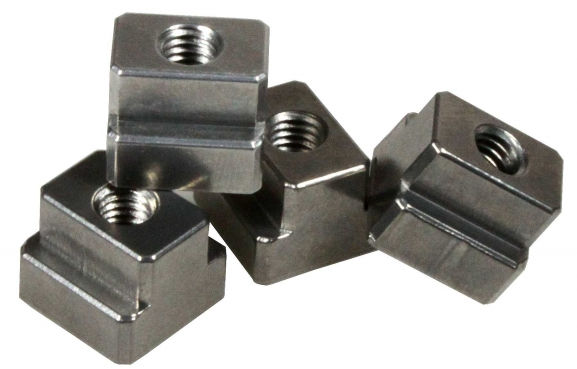
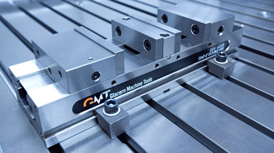

Total Guide to CNC Milling Machine Workholding
Introduction
Workholding is the generic term for any device used to firmly hold your workpiece while machining it. There are two components to workholding:
- The actual workholding device, such as a milling vise.
- The method of locating and securing that workholding device to your machine. This includes the ubiquitous T-Slots but goes on to include modular fixture plates, 4th axis solutions, and much more.
We'll go through the various methods of locating the workholding devices and then follow up with a description of your choices for workholding devices.
Positioning for Workholding Devices
T-Slots
T-Slots are the most common method of positioning and holding down your workholding solution...
T-Slots are by far the most common way of positioning and holding down your Workholding solution. They are simple, robust, and they work. To attach something to a T-Slotted table, use T-Slot nuts and suitable studs or other fasteners that fit the nuts:

T-Slot Nuts...
While they are common, they have some disadvantages relative to other solutions. Aside from the fact that T-Slots can collect chips and other debris, their biggest disadvantage is that it's hard to get your vise or other Workholding fixture back onto the table in exactly the same place and orientation. This can result in extra work every time a machine needs to be set up with new workholding for a new job. Over time, the cost of that inefficiency can be quite large.
Just imagine, what if instead of having a tool changer and a tool table you had to dial in each tool every time it was used? Wouldn't that be a huge productivity block in your machining workflow? Well, setup time can be a big productivity block too, and T-Slots are not helpful for that.
There are some solutions that've been tried to make them a little better:
Truing the Slots
We can check the T-Slots of machine to make sure the run parallel to axis motion by sweeping them with a Dial Test Indicator (DTI). If they don't, we can mill them true. A lot of folks hate the idea of intentionally milling their table, but if the T-Slots aren't true and you need them to be, it's hard to see what choice you have. But there is a choice that involves using something other than T-Slots as we will see shortly.
Keyed Vises and Fixtures
If your T-Slots are true, you can install keys on the bottom of vises or fixture plates that line up with the T-Slots. You can also install keys in the T-Slots that line up the edge of a plate or vise base. Doing so can save you quite a lot of time tramming vises and such, and it isn't hard to do, so it is definitely worth considering.
The trouble is, these kinds of solutions will help with one dimension (typically the short dimension of the table is the Y dimension and is aligned perpendicular to the slots), but we still have the problem of positioning along the axis of the T-Slot.
Fortunately, there is a better way in the form of Fixture Sub-Plates (also called Tooling Plates).
Fixture Sub-Plates, Tooling Plates, and Modular Fixturing
Fixture Sub-Plates (also called Tooling Plates) are plates that are installed on top of a T-Slot table to provide a new way to position and secure Workholding. A typical Tooling Plate looks like this:
A typical Tooling Plate...
Tooling Plates typically use a grid of holes that alternate between holes for precision dowel pins for positioning and threaded holes for fasteners. If this grid is precisely positioning (or even if it isn't and the positions are precisely known) you have a very repeatable way to install Workholding on the plate. The dowel pins provide precision location that is repeatable to perhaps half a thousandth. Imagine being able to drop a vise mounted on its own fixture plate with dowel pins and fastener holes onto a Tooling Plate and have it be repeatable to half thousandth. If all your fixtures can drop onto the Tooling Plate you can change the machine over to a new Workholding configuration very quickly indeed. The savings in time adds up to pay off the cost of such a system very quickly.
With an air ratchet in hand, a vise can be installed on one of these plates within a minute or two. A CNC Machine can be reconfigured in 5 or 10 minutes for a completely different job. And the skills required of the machine operators, as well as the potential for mistakes, are greatly reduced if the fixtures don't have to be carefully dialed in each time. There are advantages for the creation of modular g-code too, because it can rely on the positioning grid of the Tooling Plate.
If accuracy of more than half a thousandth is required, it is often better to use probing together with selected g-code parameterization to correct for the remaining error. You could try to dial things in more precisely by hand, but a probing solution can rely on things being nearly right to determine the last little bit of error correction that needs to be applied in the g-code itself. For example, it's possible to apply rotation to the g-code based on a probes results to tram (that's aligning things to the axis motion) very precisely an almost right situation.
Tooling Plates are typically made of either Cast Iron or Aluminum, though there are steel ones available too. They can be purchased or made from scratch. For more on how they're made, be sure to visit our Fixture Plate page.
Modular Fixturing
One other thing Tooling Plates help facilitate is Modular Fixturing. Once we have a fixed grid to rely on, we can purchase ready-made fixturing components that will fit the grid. This can save quite a lot of cost versus having to fabricate everything to some custom arrangement.
Ball Locks and Other Quick Change Tooling Plate Solutions
By now I hope you're seeing how much Setup Time could be saved by using Tooling Plates. What could be better? Why there are at least two different ways to improve on the theme: quick change tooling plates and pallets.
With a Quick Change system, the time required to deal with the dowel pins and fasteners is reduced through some kind of integrated solution that allows precise position and locking very quickly. One such is the Jergens Ball Lock system:
Ball Locks are a Quick Release system for Tooling Plates...
With this system, you get precise positioning and secure holding with 4 Ball Locks. Just align the plate to the sub-plate (which has the Receiver Bushings and is mounted to the table), drop the Ball Lock Shanks into the hole, twist the bolt on top of the Ball Lock Shank, and you are done. Twisting four bolts and no fooling around with dowel pins or extra fasteners is really quick and easy. Jergens talks about 30 second fixture change times which is very fast indeed.
Pallets
The next step up are Pallets. Think of them as power operated Tooling Plates whereas everything else we've talked about has been hand operated. A typical machine with Pallets allows you to be setting one or more Pallets up while the machine is working on another. A Pallet change operation cycles the old Pallet outside of the machine's milling area and brings the new one in. This minimizes the time the machine has to be offline and allows Setup to be done in parallel with machining.
Some machines have what are called "Pallet Pools", which allow multiple pallets to be set up in advance and scheduled to run. A Pallet Pool can allow a machine to run unattended for quite a long time and can be a useful building block for total automation.
Pallets are typically only seen on Horizontal Machining Centers and some high end Vertical Machining Centers. They're definitely a full-on production feature that is fairly expensive, so the cost has to be justified by the need ot keep the machines churning out parts constantly.
4th Axis, Trunion Fixtures, Tombstones, and Tool Columns
Sometimes it is helpful to be able to apply another dimension to our thinking--in this case a 4th Axis. In CNC, a 4th Axis is commonly a rotary axis that is aligned to spin along an axis parallel to one of the machine's other 3 axes. On Vertical Mills, the 4th Axis is frequently parallel to X or Y, and is laid down. On a Horizontal Mill, the 4th Axis is also parallel to X or Y, but it is standing up. Both methods work great, but the horizontal mill's standing 4th axis frequently has more clearance available since the work is never trapped between the table and the axis.
From a Workholding standpoint, a 4th Axis can be used to bring new orientations into play for two purposes:
1. It allows access to more sides of the part so machining can continue without having to flip parts around by hand.
2. It allows access to more parts which may be arrayed around the 4th Axis.
To find out more about these uses for Workholding, check out our excellent series on 4th Axis Basics.
Workholding Solutions
Having seen how we're going to position and attach our Workholding Solutions to our milling machine, let's delve into what types of Workholding are available.
Milling Vise
A pair of milling vises sit side by side on a machine table...
It's not too much of a stretch to say that the most popular Workholding Solution today is the Milling Vise. While there are many manufacturer's of such vises, the poster child is Kurt who shipped their first "Kurt Vise" in the 1950's.
What Makes a Good Milling Vise?
A good vise is well made, typically of cast iron. It operates smoothly, repeatably, and with a wedge mechanism that pulls the movable jaw down onto the bed so the part is not lifted due to deflection as the jaws are tightened. Don't scrimp on your milling vises because they're most likely the Workholding Solution you'll turn to most often.
Clean the Table and Tram the Vise
Before putting any vise on your machine table, be sure to clean the table of chips. You don't want to trap a chip between the vise or table. If you have a T-Slot table you're mounting the vise to, you'll probably want to tram the vise as well. This is the procedure of using an indicator to sweep a vise jaw (you want the fixed jaw, not the movable jaw) so you can adjust the vise position until the sweep shows the vise jaw is parallel to the axis as it moves.
Learning to tram (or "square") a vise is one of those basic skills every machinist must learn early on.
How to Tram a Vise on a Mill
2 Weird Tricks to Tram a Vise Quickly
Vise Parallels and Jaw Steps
Having the vise properly installed and trammed, the next question is proper use. Most of the time we'll want to sit the workpiece fairly high in the jaws. This is done both to provide access to the workpiece and because it provides more repeatability the less of the workpiece is gripped--there's just less area for a trip or other irregularity to influence what's going on.
We set the workpiece high in the jaws typically either by using a set of Vise Parallels or because we have jaws installed in the vise that have a step machined fairly high on the jaw. We may either machine the step ourselves (in the case of soft jaws) or purchase jaws with a step already machined.
Clamping Outside the Jaws and Other Jaw Tricks
There are a lot of Vise Jaw tricks but one of the first to be aware of is that you can mount the jaws either inside or outside the normal jaw mounting locations. Mounting outside allows larger plates to be gripped in the vise easily:
By mounting the jaws in the outside position, quite a large workpiece can be accomodated...
Increasing rigidity is always important. For this operation, two 2-4-6 blocks are used as a vise jaw extension to help support the plate on end better...
Using Multiple Vises, Jaws that Span Vises, and Grinding Matching Vises
There's an old saying that if you want to make full use of your machine you need to use every square inch on the table. Most machine tables can accomodate multiple vises, and it is very common to install multiple vises on a mill table. Our photo above of side by side vises shows one such setup. It's not uncommon to see four or even six vises on a larger millling machine. The more the merrier so long as travels will accomodate it because the more vises you have, the more parts you can machine before the machining has to stop so the operator can load new workpieces.
When you have multiple vises on a machine, it is convenient if they match in all the key dimensions to within a decent tolerance. That way if you are duplicating a setup and get the vises in a different order, all will be well. Most vise manufacturers will match vises for you or it's a fairly simple operation with a surface grinder to match a pair of vises.
Another trick that's possible with two vises is to use jaws that span both vises for handling really long parts:
Spanning two vises with a single set of jaws...
I made that set of "Jaws of Doom" for a project that required machining a thin aluminum panel for some electronics and they worked out great.
Double MillingVise
Having spread three or four vises across your mill table, you've pretty well taken advantage of the X-Axis. But, there's an opportunity to take better advantage of the Y-Axis by using Double Vises:

A typical double station vise is like 2 vises in one...
A typical double station vise is like 2 vises in one: you can put two workpieces instead of one. With judicious use of double vises you can really multiply the number of parts that can be worked at the same time on your mill's table.
Vises to Hold Other Workholding Solutions
Between using multiple vises, double station vises, moving the jaws around, and even using jaws that span multiple vises, quite a lot is possible using just vises. In fact, you can even use the vises to hold other Workholding gadgets. It's a very common trick to drop a sine vise into a milling vise to get jaws working the other direction:
Use a sine vise to hold a part at 90 degrees from where the milling vise jaws run...
BTW, sine vises are also called Toolmaker's Vises or Grinding Vises.
You can also create small plate fixtures that are designed to sit in a vise, creating what is often called a "vise pallet" since the individual plate fixtures can be swapped out of the vises much like pallets.
Vise Pallets are just small plate fixtures designed to be held in the jaws of a milling vise...
In general, solutions like Vise Pallets are created to enable vises to be left on the machine in shops where the flexibility and simplicity of vise workholding is ideal for most of their jobs.
Tormach made a great suggestion over in their blog which was to use a Sine (Toolmaker's) Vise as a vise pallet.
Soft Jaws and Custom Hard Jaws Multiply the Vise's Workholding Flexibility
Soft Jaws on milling vises are a very popular form of workholding. The idea is to create aluminum vise jaws (since aluminum is softer than ferrous materials that's where the name comes from) that are customized for particular jobs. Sometimes a more durable material is advantageous, in which case we have Hard Jaws.
Here are some examples:
Use soft jaws to locate and hold a larger round part. A "V" is often seen, but it won't support the part as well as the soft jaws.
As mentioned above, we don't want to grip the whole height of the part in the jaws. A particularly thin grip can be had with dovetail jaws. The little red circle points to the dovetail which locks the workpiece in from slipping upward under heavy machining. These are Carvesmart quick change jaws.

Here's a common setup. The part is machined from a block on the left (those are the same Carvesmart dovetail jaws). Then the part is flipped in a set of custom soft jaws on the right that are the mirror image of the part. A Face mill then takes off the little bit of flat stock left from the original material (that's already happened in this photo).

Lang Innovations makes these neat jaws that make it easy to set the workpiece in the vise at a precise angle when needed. The pins can be individually pushed in to create angles and other holding patterns too...
These are but a few examples. When using Custom Jaws, your imagination is the only limit. Well almost, table size will play a role as will the number and type of vises you have available.
Quick Change Jaws
I hope you're getting the idea that Milling Vises with Custom Jaws can be a powerful workholding solution. So powerful, in fact, that a lot of work is done solely with this style of Workholding. Shops spend a lot of time creating Custom Jaws and often box them up in storage to use for other jobs or in case a customer reorders a part. Even though the vises spend most of their time on the table, we still have a Setup Time bottleneck in the time it takes to change vise jaws. Maybe you saw this coming, but there are a variety of Quick Change Vise Jaws available too. The Carvesmart jaws we pictured are one variety, but there are many more. Judicious use of an air ratchet and socket head cap screws can also speed the job of changing jaws.
Plates, Plate Fixtures, and Clamps
As useful as vises are, they have a sweet spot for part size. They have a difficult time with really large plate work, though as mentioned you can move the jaws to the outside positions for medium-sized plates. And, they can also be less than optimal for very small parts. Sure, you can fit multiple parts in a set of Soft Jaws, but the space between adjacent vises and the space required for the vise mechanism makes it hard to fully fill the table with as many small parts as you might otherwise be able to.
It's hard to achieve this dense packing of smaller parts with a vise, but a plate fixture makes it easy. This one uses Mitee Bite Pit Bull clamps. The effect is not unlike tiny milling vises designed to fit each part just right.
When its time to machine large plates or a great many small parts, it's usually time to pull the vises off the table and use a workholding solution based on clamps.
Step Clamps
The most common type of clamps are called step clamps because they have little steps machined on them. They're commonly used with T-Slots, although you can also use bolt them into a Tooling Plate. Here are some typical Step Clamps:
Step Clamp holding down plate, step block supporting end of clamp, and bolt goes through T-Slot Nut...
A typical Step Clamp Set...
Pictured is a typical Step Clamp Set. It can be handy to stock up on a an extra set so you've got more clamping parts to work with. By stacking the Step Blocks and using longer bolts, you can clamp workpieces that are quite tall. When using step clamps, keep the bolt close to the workpiece rather than the step block. Also, it can be helpful to angle the clamp down on the part by raising it up a step or two from level. You may also want to put a shim of soft material between the clamp and the workpiece if you want to avoid marring the workpiece. Soda can makes a great shim for this purpose if you slice out some strips with your snips.
Toe Clamps
Step Clamps grip the top of the workpiece, which is sometimes inconvenient because you might need to machine the area being gripped. Toe Clamps grip the side of the workpiece to give you full access to the top of the workpiece. There are a wide variety of different styles available:
This toe clamp moves the clamp down a ramp when tightened to press against the workpiece...
These Mitee Bite Edge Clamps have an eccentric bolt head that forces the hex against the workpiece as you tighten it...
Tab Supports: Workholding Via CAM Software
What if your CAM software could solve some major workholding problems for you, wouldn't that be neat?
Turns out some CAM software can help out with workholding quite a lot by automatically creating tabs. Here's a video of MeshCAM's facility for creating tab supports to help machine a part that has to be machined on 2 sides and is awkward to hold otherwise:
Using MeshCAM to add tab supports so you can machine a part on 2 sides...
We offer MeshCAM at CNCCookbook because it's one of the easiest to use CAM packages there is.
Double Sided Tape, Glue, Wax, and Low Melting Point Alloys
Some workpieces can be very difficult to hold because they're too thin or because their shaped so there's just no way to clamp on. Some solutions for these situations are in the form of Double Sided Tape, Glue, Wax, and Low Melting Point Alloys.
The Glue needs to be something that will release when needed. For example, Super Glue releases at a particular temperature just like LocTite. The fumes from it are toxic, so take care to release with plenty of ventilation. Double sided tape can work great, especially for really thin materials.
Wax and Low Melting Point Alloys (typically Bismuth alloys) can be used to embed the workpiece and create grippable area. When the machining is done, one can melt the wax or alloy away and save for reuse.
Vacuum Fixtures
Need to apply uniform pressure to hold a part down? Maybe a vacuum fixture is the answer. Sea level air pressure is 14.7 lbs per square inch. A vacuum fixture pumps a vacuum under the part so that air is pressing down on every square inch of the top with 14.7 lbs of pressure. That can create considerable holding force if there is enough surface area regardless of the shape of the top or how thin the material may be. We have a nice article on how to create your own vacuum fixtures that's very popular. For more in-depth information on vacuum workholding visit our Vacuum Table Page and our DIY Vacuum Table Page.
Perhaps the biggest disadvantage of vacuum fixtures is their hold-down force is limited by surface area--that means small parts can pop off relatively easily. When cutting forces exceed the hold-down force a vacuum table can pull, the part pops off and is generally ruined. This is a common problem for vacuum table users, especially for smaller parts that don't have much surface area. Until now, fixing the problem has been hit or miss, but our G-Wizard Calculator software now has the ability to limit cutting forces to what your vacuum table can handle. For more information, check out our article on this special feature.
Chucks and Collets: For Round Parts
While we typically think of machining round parts on lathes, there are many times when you may need to mill them as well. If you've got a Mill-Turn machine, it may not be necessary to put them on a mill, but if you don't, or if you just need to work on some round parts on the mill, you can use the same workholding solutions Lathes use. Just bolt or clamp them down to your mill table. For example, use a 3 jaw chuck or a bank of collet chucks.
Lathe Chucks are particularly common on 4th Axes because we often start from round stock.
Every now and then we put round parts on the mill because it's just downright faster. Consider this setup for machining round parts::

I never would have guessed it, but Geof on CNCZone says the following 4-axis mill set up was able to machine these aluminum bars to length, ensure the faces were square, and drill and tap a hole faster than he could do it in a lathe. You can imagine each of those round parts being a 5C collet and suddenly you fit quite a few more parts on your 4th Axis. There's probably room to do them on all 4 points of the compass on a rig like this.
Expanding Mandrels, Arbors, and Studs
Toe Clamps are one solution to keeping the workholding away from the milling, but we can do even better using expanding mandrels, arbors, or studs. The idea is to put an expanding cylinder in a hole on the underside of the workpiece and expand it to lock the workpiece in place. Once that's done, you can access the workpiece from every direction except the bottom without encountering the workholding (do remember where the mandrels are though so you don't have one in the middle of a pocket waiting to be hit!).
Here is a fixture using expanding studs:
Turn the bolt opens the expanding stud so it can clamp the workpiece...
There are a wide variety of these kinds of gizmos available for your workholding needs. They're particularly common for lathes, but as we mentioned, you can use lathe workholding all day long provided you find a way to mount it to your table.
5-Axis Workholding
5-Axis workholding, like most things 5-axis, is a whole other world. I won't go into any detail here other than to say you need different kinds of workholding when you can access a part from virtually any direction. It becomes more challenging in this kind of workholding that the workholder not get in the way of milling the part.